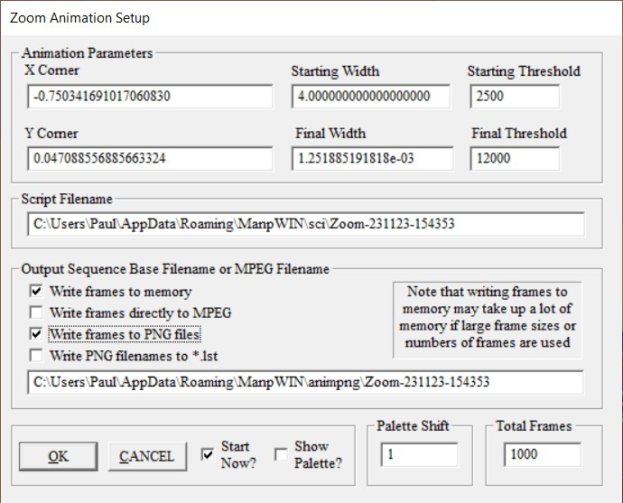
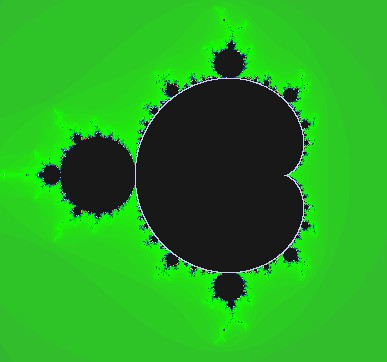
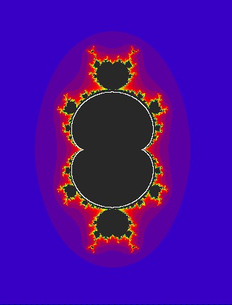
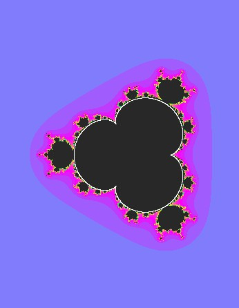

ManpWIN supports animations of up to 100,000 frames. As a guide, creating 1024 frames at 640×480 requires approximately 1 GB of memory if all frames are stored.
For large animations, it is recommended to:
The fractal to be animated must be loaded before starting an animation.
Generates a sequence of PNG images zooming from an initial width (typically 4.0) into the final image. The centre point remains fixed.
The threshold can vary geometrically across frames.
Palette Shift: controls colour movement during zoom:
A value of 3 works well for ~1000 frames.
The following example demonstrates a typical animation setup using Zoom Animation. Many of these parameters and workflow steps are common to other animation types.
Begin by setting the image size to match the desired animation resolution. For example, a Full HD animation should use 1920 × 1080.
Position the view at the starting location within the fractal, then press Ctrl+A to open the Zoom Animation setup dialog.

The starting location, final width and final threshold are automatically initialised. The starting threshold should be large enough to maintain detail throughout the zoom.
The number of frames determines the animation length. As a guide:
For large animations, it is recommended to:
The palette can optionally be shifted during the zoom to create colour motion. Negative values reverse the direction.
ManpWIN can generate MPEG-2 files directly for short animations. For higher quality output, larger resolutions, or audio support, it is recommended to generate PNG frames and process them using an external tool such as FFmpeg or ManpMovieMaker.
While this example focuses on zoom animation, similar principles apply to Julia, parameter, and oscillator-based animations.
Any point on the Mandelbrot set defines a unique Julia set.
Three animation paths are available:
A test option shows the path through the Mandelbrot set.

Example circle Julia animations:
[-1.0, 0 radius 0.25], [-0.125, 0.75 radius 0.1], [-1.309, 0 radius 0.0595], [0.281, 0.5313 radius 0.044]
These assume the Mandelbrot set. Other powers (Zn) produce different results.


Displays rotating vectors representing waveform harmonics.
Animates changes in the growth rate parameter.
Animates changes in the Ikeda parameter b.
Generates inverse fractals based on a selected centre point.
Supports:
Animates a selected parameter across a range of values.
Options include:
Supports:
Default mode. Rotates through 360° about selected axes. Multiple axes may be combined.
Displays time evolution of the system.
Lower iteration counts often give better results.
Transitions between axis pairs.
A delay may be inserted between transitions.
Note: Oscillators may scale unpredictably. Fractal maps and knots behave more consistently.
See also: Keyboard Commands
| + | Increase speed |
| - | Decrease speed |
| S | Pause / Resume |
| Space | Single step |
| S (twice) | Resume from step |
| Esc | Exit |
| R | Reverse direction |
| A | Save PNG frames |
| G | Save GIF |
| M | Save MPEG |
GIF speed settings are preserved. MPEG runs at 25 fps.
Press Shift+S or Esc.
For high-quality animations with sound, ManpWIN can be used in conjunction with an external tool called ManpMovieMaker.
This utility uses FFmpeg to convert image sequences into polished MP4 videos, optionally including audio tracks.
Workflow:
Project available at:
https://github.com/PaulTheLionHeart/manp-movie-maker